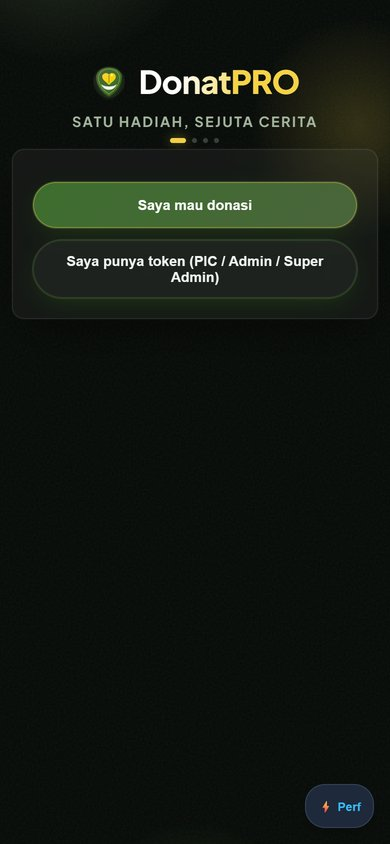
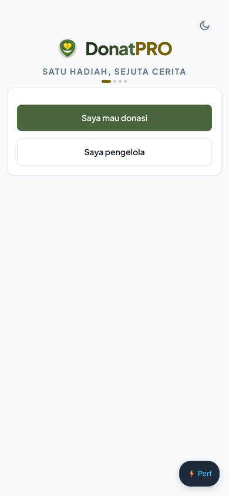
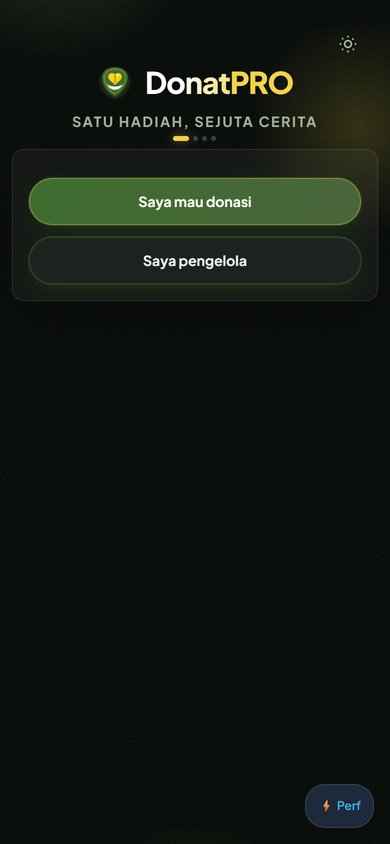
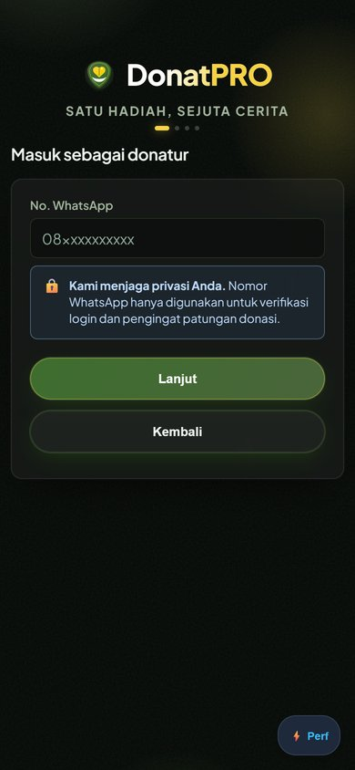
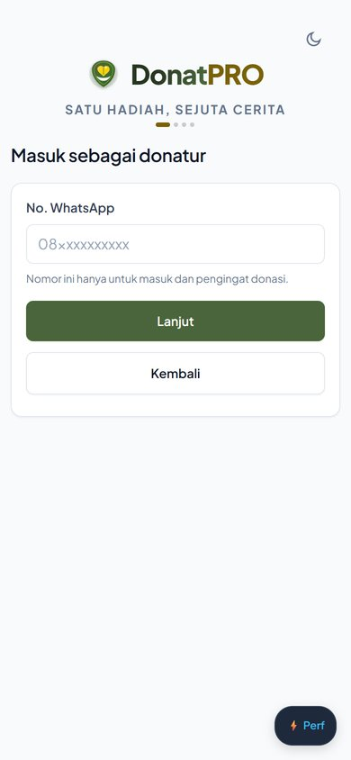
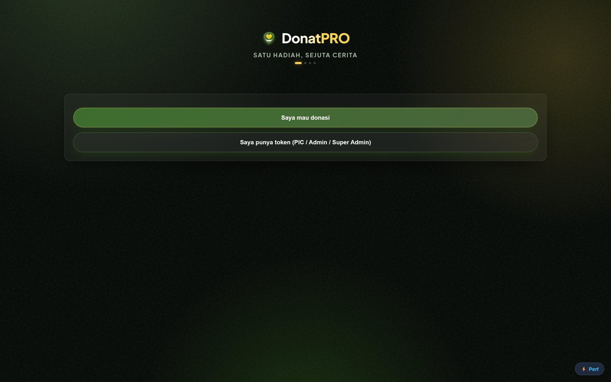
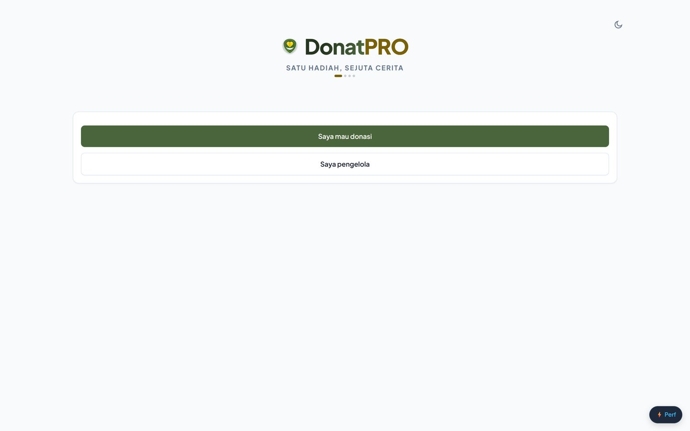

Apa yang berubah, dan di mana kamu perlu memeriksa
Halaman ini adalah versi review: setiap perubahan punya pasangan sebelum/sesudah,
angka yang diukur, dan satu daftar fokus berurutan. Semua "sesudah" di sini adalah tangkapan dari
kode yang berjalan sekarang, bukan mockup. Bagian 6 berisi batch yang gagal — itu yang
perlu kamu baca paling teliti.
0
Mulai dari sini — urutan review
Kalau waktumu terbatas, periksa dalam urutan ini. Nomor 1 bisa membuatmu menolak
seluruh pekerjaan; nomor 4 hanya kosmetik.
1
Tema ganda: apakah terang terasa disengaja, bukan sekadar "gelap dimatikan"
Cek 3 layar × 2 tema. Satu tema yang salah lebih merusak daripada semua copy digabung.
Bagian 1 di bawah · theme-toggle di kanan atas
2
Copy yang dihapus: ada layar yang jadi tidak jelas?
32 kalimat menjadi 20. Ini yang paling mungkin mengganggu pengguna baru — dan paling murah diperbaiki.
Bagian 3 · tabel pasangan copy
3
Desktop PIC: grid 3 kolom terasa benar di lebar kerjamu?
Bukan bug, tapi keputusan tata letak. Kalau kamu lebih suka satu kolom lebar, bilang.
Bagian 4 · ukuran terukur 1024px+
4
Inline style yang tersisa (236) — terima sebagai utang, atau minta dikerjakan?
Batch yang gagal. Tidak ada perubahan tampilan, jadi aman; hanya kerja kebersihan.
Bagian 6 · bukti kegagalan
1
Layar awal — dua pintu, dan tema
Perubahan paling terlihat oleh orang baru. Tombol kedua tidak lagi memaksa tahu
kata "token" dan memilih satu dari tiga peran staf.
A. Layar awal (390px)
Label tombol kedua: 48 karakter → 14. Header tetap 133px di landing (sengaja —
ini "hook" merek, bukan layar kerja).
Sebelum — HEAD

"Saya punya token (PIC / Admin / Super Admin)" — membungkus 2 baris
Sesudah — terang

"Saya pengelola" · Plus Jakarta Sans · toggle di kanan atas
B. Tema gelap — layar yang sama
Ini yang perlu kamu nilai: apakah gelap terlihat seperti tema, atau seperti
halaman lain. Perhatikan wordmark (putih→emas di gelap, hijau tua→emas di terang).
Terang
Gelap

2
Layar masuk — panel privasi jadi satu baris
Blok berbingkai 324×81px dulu bersaing dengan tombol utama dan terbaca seperti kartu
yang bisa diketuk. Sekarang satu baris redup di bawah field.
Sebelum

Panel berbingkai + emoji 🔒 · 81px tinggi
Sesudah

Satu baris 12px tanpa bingkai · input jadi elemen dominan
Yang perlu kamu cek di sini
Apakah kalimat "Nomor ini hanya untuk masuk dan pengingat donasi." masih terbaca sebagai janji
privasi, atau tenggelam karena terlalu kecil. Kalau tenggelam, ini kandidat untuk dikembalikan.
3
Copy yang dihapus — 32 kalimat menjadi 20
Aturan yang dipakai (Q13): pertahankan hanya kalimat yang mencegah kesalahan
nyata. Sisanya dihapus, bukan ditulis ulang.
Satu baris: "Nomor ini hanya untuk masuk dan pengingat donasi."
Admin, hint toolbar
Cari dan filter tersedia sebelum data ditampilkan. <b>×5</b>
dihapus semua
Tools PIC
Gunakan untuk membuat akses token PIC baru secara manual.
dihapus — label tombolnya sudah menjelaskan
PIC, kotak bagikan (Open/Closed)
Salin pesan undangan beserta daftar peserta yang sudah bergabung.
dihapus — judul + label tombol membawa maknanya
PIC, kotak bagikan (Finalized)
Semua pembayaran terverifikasi. Salin pesan terima kasih untuk grup.
dihapus — judul "Target Terkumpul!" cukup
PIC, tagihan patungan
Salin rincian tagihan pro-rata, nominal bebas, dan nomor rekening untuk dibagikan ke grup.
dihapus — judul "Tagihan Patungan (Grup):" cukup
Admin, ajukan donatur susulan
Tambahkan teman yang belum sempat daftar di list sebelumnya.
dihapus — field "Nama Teman"/"No WhatsApp" menjelaskan sendiri
Admin, kosongkan target
Isi nominal baru. Ketik 0 untuk mengosongkan target selama campaign masih terbuka.
dipertahankan — konvensi tidak bisa ditebak
Upload bukti transfer
Format JPG, PNG, atau PDF (maks 2MB) untuk diverifikasi oleh PIC.
dipertahankan — mencegah upload format salah
Yang SENGAJA dipertahankan 8 kalimat
Format file ditolak (JPG/PNG/PDF, maks 2MB) — 3 tempat. Tanpa ini orang mengunggah
.docx dan tidak tahu kenapa gagal.
Alasan refund diblokir — "Selesaikan refund dulu sebelum verifikasi."
Konvensi "Ketik 0" — tidak bisa ditebak dari UI mana pun.
Peringatan token PIC kedaluwarsa saat memindahkan hak PIC.
Janji privasi pada upload bukti transfer.
Dua jalur upload berbeda (dari chat WA vs bayar langsung).
4
Angka yang diukur (bukan diperkirakan)
Semua diukur di browser pada 390×844 kecuali disebut lain.
Metrik
Sebelum
Sesudah
Status
Font tombol
Arial
Plus Jakarta Sans
benar
Family font dimuat
3
1
benar
Header dasbor
133px
44px
benar
Header landing
133px
133px
sengaja sama
Konten mulai (mobile)
149px
72px
benar
Empty state tanpa aksi
12 dari 18
0
benar
Request CDN pihak ketiga
5
3
benar
Input tanggal di mobile
type=text
type=date
benar
Nilai spacing token
0
206
benar
Kalimat helper (prosa)
32
20
−37%
Row aksi PIC di 1440
1136px
371px ×3 kolom
benar
supabase-js
@2 mengambang
@2.119.0 + SRI
benar
data-testid
0
196
benar
CSS mentah
58.8 KB
65.7 KB
+6.9 KB sumber
CSS terkirim (gzip)
14.9 KB
16.5 KB
+1.6 KB
Test
129
138
semua hijau
Inline style= tersisa
328
236
utang (lihat §6)
5
Desktop 1440px
Landing: wordmark tetap responsif clamp(30px,5vw,44px) — logotipe,
bukan teks UI, jadi sengaja di luar skala tipe.
Sebelum

Sesudah

PIC di desktop — yang berubah adalah BARIS, bukan tombol
Sebelum: setiap aksi jadi satu baris 1136px, tombol 96px terlempar ke ujung kanan — teks dan
tombolnya terpisah ~1000px sehingga terbaca sebagai dua hal berbeda. Sekarang grid
repeat(auto-fill, minmax(320px,1fr)): 3 kolom 371px, tombol 17px dari teksnya.
Di mobile tidak berubah: tombol tetap selebar layar, tinggi 46px.
6
Yang GAGAL dan dibatalkan — baca ini
Batch B7b diminta memindahkan 122 atribut style= ke class CSS dengan
hasil visual yang identik. Yang terjadi sebaliknya: 39 nilai deklarasi diubah diam-diam.
Batch dibatalkan, kode dikembalikan persis seperti sebelumnya.
Ini bukan bug kosmetik — ini perubahan desain yang menyamar sebagai refactor
font 13px menjadi 14px (13 tempat), 11px menjadi 12px (9 tempat), radius 4px/6px menjadi 8px
(5 tempat), dan satu latar semi-transparan menjadi putih solid. Semua 138 test tetap hijau,
karena tidak ada test yang memeriksa nilai deklarasi.
Bukti — keluaran pemeriksa, dijalankan pada hasil kerja B7b
Yang ditambahkan supaya tidak terulangscripts/check-refactor-parity.mjs membandingkan nilai deklarasi sebelum vs sesudah
dan menolak kalau ada yang hilang, plus tests/refactor-no-restyle.test.js yang
mengunci nilai off-grid (13/11/15/24px, radius 4/6px, gap 6px). Diverifikasi dua arah: 0 temuan
pada kode sekarang, 39 temuan pada hasil B7b.
Yang masih tersisa 236 inline style
Batch ini belum dikerjakan dan tidak mengubah tampilan — murni kebersihan kode
untuk memudahkan perubahan tema berikutnya. Aman untuk diluncurkan. Kalau ingin dikerjakan,
sekarang ada pagar otomatis yang membuatnya terukur.
7
Cara memeriksa sendiri dalam 30 detik
Satu perintah, semua pagarnode scripts/verify-batch.mjs — memeriksa sintaks setiap modul view, semua
var(--token) yang dipakai benar-benar terdefinisi, refactor tidak diam-diam mengubah
nilai, 138 test, dan jumlah testid/inline-style per file. Keluarannya KEEP atau
REVERT.
Halaman hidup (bukan tangkapan layar)COMPARISON-local.html berdampingan dua iframe: kiri aplikasi asli dari
git archive HEAD di :3101, kanan kode sekarang di :3000. Ada mode tumpang tindih
dengan slider opasitas untuk melihat tepat apa yang bergeser.